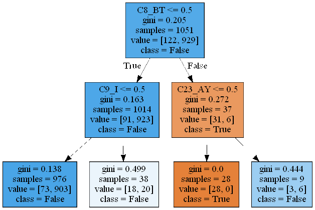

典型的な決定木図の描画
pythonで決定木解析の結果として，Graphvizなどの利用により，上図のような決定木が描画される．この図の意味する内容について，調査した上で自分なりに整理してみた．ただし，酒井の勝手な解釈であることを付記しておきます．
まず，四角で囲まれた部分はノードと呼ばれ，決定木の各ステップの情報を示している．上から下へ流れていくので，一番上のノードがスタート時点である．一番上のノードについて考える．
第一行目の\(C8_BT<=0.5\)は，最初の決定木分岐を判断するための条件である．C8_BTは入力項目名である．第二行目の\(gini=0.205\)はスタート時点のデータの不純度係数(gini係数)である．この係数は，クラス分類に対する不純度の程度を示す量で，0であるとき完全に分類できたことを示す．この原理については，後述する．第三行目の\(samples=1051\)はこの段階で1051個のデータがあることを意味する．第四行目の\(value=[122,929]\)は，samples個のデータの中の各クラスの分類数を示す．例えば，ターゲットとなるクラスがTrueとFalseの二クラスのとき，このノードの段階では，Falseの数の方が多いので，ノードの段階での状況をFalseであると記述しているようである．この記述の意味はよく分からないが，決定木の分岐を繰り返していって，末端のノードのクラスが全てTrueとなっていれば，妥当な推論モデルと評価できるのかもしれない．その意味で，分岐の深さを探索する際の指標として使うことができるものと考えられる．
なか図の描画にあたってtree.export_graphviz関数の引数のproportion=Trueを設定すると，samplesとvalueの表示が%表示となる．この場合，samplesは，全サンプルの中で，当該ノードのデータ割合を示す．また，valueには，当該ノードのデータについて，TrueとFalseの割合を示している．
図の次の段には，第一行で示した条件が成立したデータを抽出した結果がTrueで示される方向に流れることを示す．同様に条件が成立しなかったデータを抽出した結果がFalseの方向に流れる．上図の場合には，1014個のデータが条件成立，37個のデータが条件不成立であったことを示している．以下は同様に，決定木の解析を実行していくことになる．原理的には，データの個数分分岐を繰り返せば，必ず全てのクラスに分類できるが，過学習となってしまい，汎化性能が落ちる．従って，適当な深さを指定して，計算を打ち切ることが行われる．
t番目のノードのgini係数\(I_G\)は次式で定義される．
$$I_G(t)=1-\sum_{i=1}^m p(C_i \| t)^2$$ ここで\(m\)は，ノード内のクラス数であり，上図の例では\(m=2\)である．\(p(C_i | t)\)はsamplesのサンプル数の中で，クラス\(i\)に属する確率を示す．第一ノードのgini係数は以下で計算できる． $$ I_G(1)=1-[(\frac{122}{1051})^2+(\frac{929}{1051})^2)] \approx 0.205 $$ となり，上図の数値と一致していることが確認できる．決定木図を見ながら，適度なdepthを探索する必要がある．まず，末端のノードのgini係数が可能な限り0に近づくことが望ましいが，一方でdepthが大きすぎることは過学習となっている可能性がある．depthに適当な数値を割り当てた上で解析すると，末端のノードの中に0でないものが出現する．最も大きなgini係数のノードについて，上に遡っていき，gini係数の変化割合が小さければ，無駄な階層を増加させている可能性がある．このような観点から，適切なdepthを設定するのも一つの方法と考えられる．